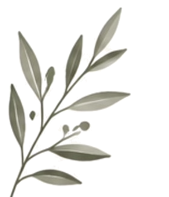

Sobre nós
O lar é onde recarregamos nossas energias.
A Casa Intencional nasceu para ajudar você a transformar a casa que já tem em uma aliada da vida que deseja viver, com mais intenção, presença e conexão com o que realmente importa.

Quem conduz a Casa Intencional
Mônica Pajewski
Designer de interiores com mais de 15 anos de experiência, Mônica é a fundadora da Casa Intencional. Ao longo da carreira, já ajudou a transformar mais de 100 casas.
Ela acredita que o lar é onde recarregamos nossas energias, e que essa transformação não exige uma casa perfeita: começa com um novo olhar para a casa que você já tem.
História da Mônica e de como a Casa Intencional começou (2 ou 3 parágrafos). Aguardando texto.
- +15anos de experiência em design de interiores
- +100casas transformadas
- 7dias para dar o primeiro passo com o Desafio 7 Dias
No que acreditamos
Os quatro pilares de uma casa intencional
A casa e os ambientes
Descrição curta do pilar.
Os hábitos e a rotina
Descrição curta do pilar.
O bem-estar e a relação consigo
Descrição curta do pilar.
Valores e propósito
Descrição curta do pilar.
Por onde começar
Comece pelo lugar onde a sua vida acontece.
Conheça os cursos e as mentorias da Casa Intencional.
Ver os cursos